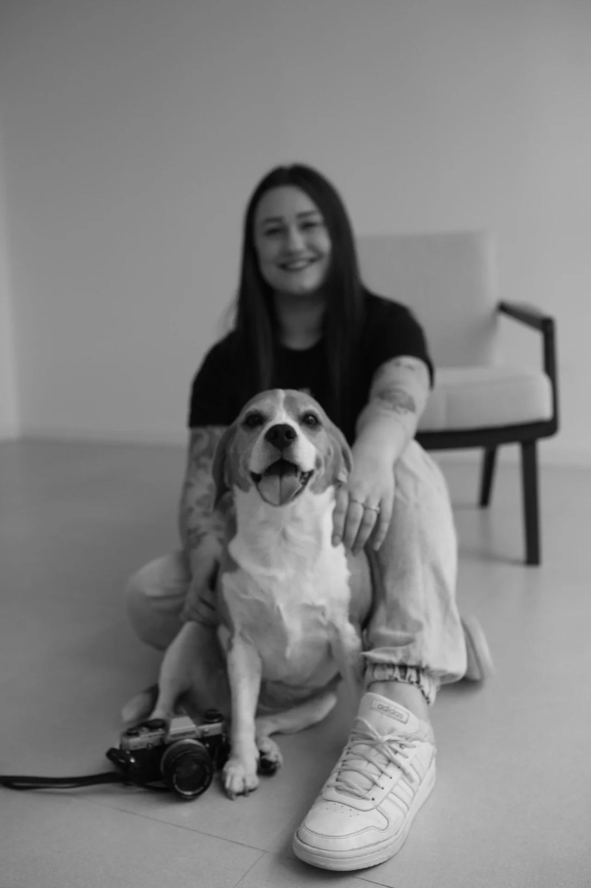

Essencial
Responde dúvidas comuns e envia informações na hora.
pra quem responde a mesma coisa o dia todo
automação · agentes de ia · design thinking
Bots de WhatsApp que atendem, agendam e sabem a hora de te chamar. Automação sob medida pra empreendedores e pequenos negócios.
// automatiza o suficiente. o resto continua humano.
Fotógrafa. Ex-gerente PJ. Analista de dados.
Já sentei nos dois lados da mesa: quem contrata e quem cria.
Antes do bot, organizo a sua base: contatos, histórico, planilha. Bot só é tão bom quanto a informação que ele tem. Se não existe nada organizado, eu crio. Se já existe, eu ajusto. Isso vem incluso.
// escolha o nível pelo que seu negócio precisa hoje. dá pra subir depois.
Responde dúvidas comuns e envia informações na hora.
pra quem responde a mesma coisa o dia todo
Marca, remarca e confirma horário sozinho, direto no seu calendário.
pra clínica, salão, consultório
Aborda leads, qualifica e conduz até a reunião marcada.
pra quem vende e não quer perder cliente
// esses já trabalham todos os dias, em negócios reais
Lead esfria em minutos. Ninguém responde na hora o dia todo.
Bot que aborda, qualifica e agenda com memória por contato. Sem inventar preço.
90+ dias sem parar
Agenda engolida pelo WhatsApp. Faltas por falta de confirmação.
Assistente que agenda no Google Calendar e passa pra humano quando o assunto precisa.
piloto ativo em clínica
// somam a qualquer nível
Rotinas fora do WhatsApp: triagem de email, nota virando planilha, relatórios prontos toda semana.
Os números do seu atendimento em tempo real, num lugar só. Você vê o que tá funcionando.
Seu bot atendendo cliente estrangeiro sem perder tom nem contexto.
Sua equipe aprendendo a usar, ajustar e cuidar do que foi montado.
Antes de vender qualquer coisa, um raio-x do que já roda de verdade. Clica num botão ou digita pra explorar.
// digita 'ajuda' pra ver tudo. tem coisa escondida aqui.
// versão de mostruário. a completa lembra das conversas e mexe na agenda de verdade.
IA é espelho. Reflete quem usa.
// ferramenta nenhuma funciona sem pensamento crítico, analítico e humano
// design thinking aplicado, não ferramenta pela ferramenta
Mapear onde o seu tempo escorre de verdade, antes de falar de ferramenta. Às vezes a resposta nem é bot.
// diagnóstico > hypeFluxo no papel primeiro. A automação certa nasce do seu processo, não da moda do momento.
// papel e caneta ainda vencemBot funcionando de verdade, com trava de segurança em cada ponta, backup antes de cada mudança e teste depois de cada ajuste.
// backup antes, sempreMedir o tempo recuperado e ajustar. É a única métrica que importa aqui.
// tempo é a moedaSou a Fabiana. 12 anos em fotografia, design e branding, mais 5 de mundo corporativo entre banco e indústria, e desde 2024 construindo soluções inteligentes para o dia a dia real do negócio, não em slide.
Trabalho com tecnologia pra tirar humanos de tarefa de robô. Não pra acelerar você infinitamente: pra devolver o espaço de pensar, criar e respirar que o operacional engoliu.
Pensamento crítico não é opcional aqui. Toda automação que entrego tem regra clara do que o bot pode e do que ele nunca faz, porque confiança se constrói com limite, não com mágica.
// ponte entre o mundo dos boletos e da consciência

Tem duas partes: a implementação, paga uma vez, e uma mensalidade que mantém o bot no ar, ajustado e evoluindo com o seu negócio. O valor muda conforme o nível, do Essencial ao Integrado. Na conversa de diagnóstico você recebe o número exato do seu caso, sem surpresa.
Projetos sob medida costumam levar de 2 a 4 semanas, do diagnóstico até o bot respondendo seus clientes. Projetos maiores, com mais integrações, podem levar mais. Você recebe prazo honesto antes de fechar.
Se o seu WhatsApp toma tempo que deveria estar em outra coisa, provavelmente sim. Os casos mais comuns: comercial que demora a responder lead, clínica ou consultório com agenda bagunçada, atendimento que repete as mesmas respostas o dia inteiro.
Eu. Tem plano de manutenção com ajuste de prompt, monitoramento e evolução do fluxo. Bot não é planta que você rega uma vez: o negócio muda, o bot acompanha.
Essa é a pergunta certa. Meus bots têm regras rígidas: não inventam preço, não prometem o que não existe e passam a conversa pra um humano quando o assunto sai do escopo. O primeiro cliente do meu SDR é ele mesmo: é assim que eu vendo.
Sem formulário de 12 campos. Uma conversa de WhatsApp, você descreve o processo, eu te digo com honestidade o que vale automatizar e o que não vale.
Chamar no WhatsApp// Vamos conversar?